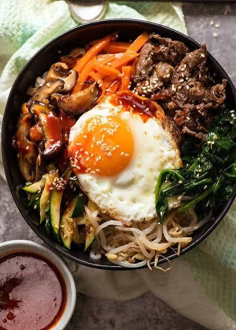
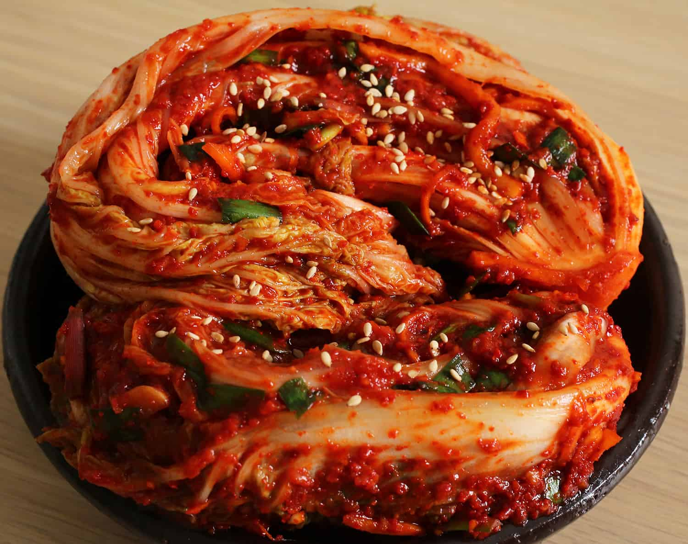

Flavors of Traditional Korean Cuisine
Korean cuisine is famous for its delicious flavors, colorful ingredients and traditional cooking styles. Rice, vegetables, seafood and meat are commonly used in Korean dishes.


Popular Korean Dishes
Kimchi is one of the most popular Korean foods. It is a traditional fermented cabbage dish with a spicy and tangy taste.
Bibimbap is a famous Korean rice dish served with vegetables, egg and different toppings. It is colorful and delicious.
Tteokbokki is a popular Korean street food made with chewy rice cakes and spicy sauce. Korean food is enjoyed by people all over the world.